| ・ プログラミング演習 (H27.11.24) | |||
去年からスタートのプログラミング演習を早速スタートです．顔合わせから数日ですが，すぐ始めないと3月末で演習が終わりません．来年の4月に研究テーマを決める頃には，計測研の3大計測（ホログラフィ計測、センサ計測、PIV計測）のデータ処理が自作プログラムで可能になっている予定です．今年からB4主導で3月末に向けての実力判定テストと院試についてのレクチャーもあります． |
|||
|
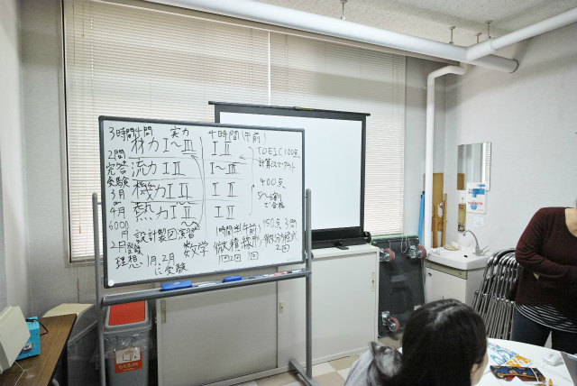
実力判定と院試のレクチャーから |
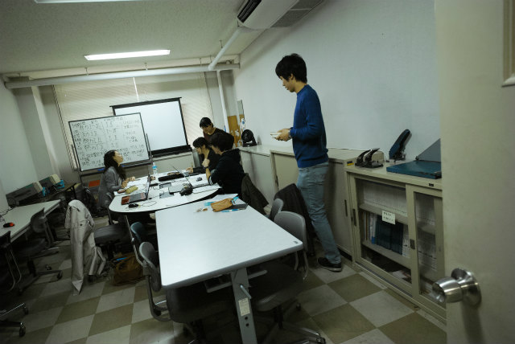
続いてコンパイラのインストール | ||
|
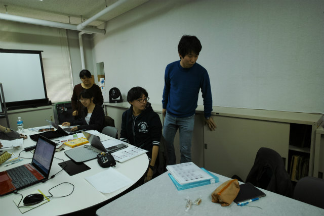
Cのテキストはいろいろあります |
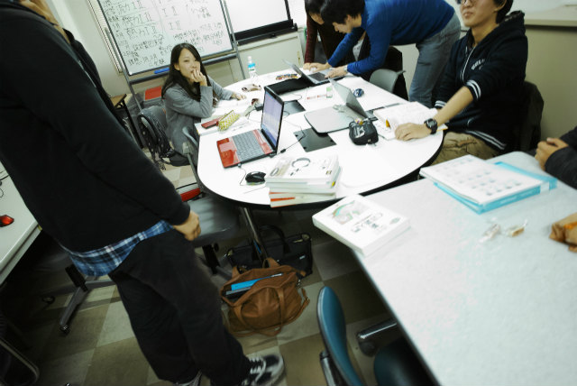
選り取り見取り，書いて覚えましょう | ||
|
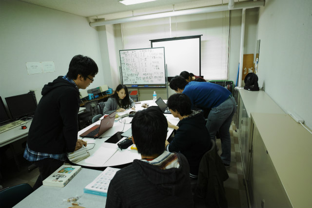
B4のKNくんとY岡くんのサポート |
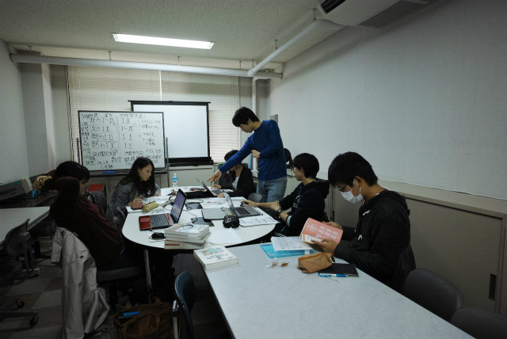
何を入れるか | ||
|
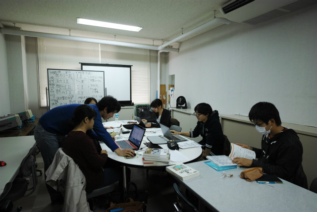
まずは設定 |
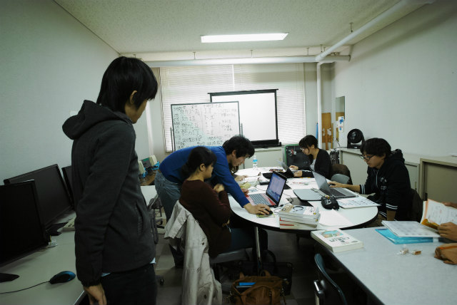
去年見てくれたM1のTNくん | ||
|
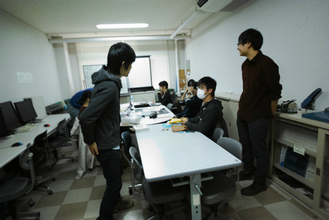
M1のTMくん曰く， |
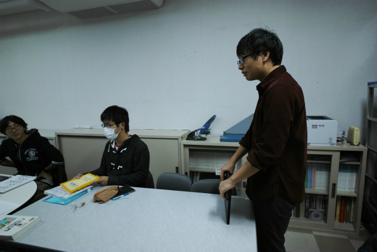
ノートパソコンはええヤツにしました | ||
|
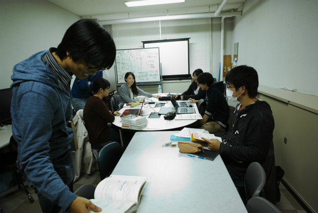
M2のShogoが様子見に |
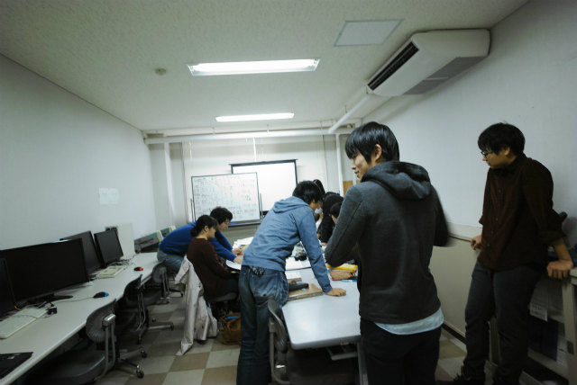
コーディング環境を今日は作りましょう | ||